Transverse section through cylinder 1 (outer row, bank 1).
Subject: 8.0-litre, quad-turbocharged W16 reconstructed from publicly documented information on the Bugatti Chiron engine.
Status: concept-level digital engineering package (analysis + parametric CAD + linear FE). Not manufacturer data, not released for manufacture.
Open item - piston: the piston FAILS hot fatigue with temperature-dependent strength (4032-T6 lower-bound data after 10,000 h at temperature: factor 0.10-0.28 over the hot regions); the room-temperature fatigue factor 2.05 is not an acceptance measure; piston thermal design is an OPEN item (section 8.1).
Date: 2026-11-14. Generated by: python -m w16.docs from the evidence files in this repository.
The package reconstructs the architecture of the W16 from public sources and fills every gap with a labelled engineering value. Each number carries a tag: PUB (published), SEC (secondary source), CALC (calculated here), EST (engineering estimate). What exists:
| Deliverable | Content |
|---|---|
| Research + reference specification | sources with confidence levels, firing-order consistency proof, parameter table |
| Analytical models | 0-D cycle and turbo matching, crank-train dynamics and balance, valve train, thermal / lubrication / fuel sizing |
| Parametric CAD | 151 part numbers, 1597 placed parts, 15 sub-assemblies, generated from one parameter file |
| Checks | CAD compression ratio, interference (static + 12 crank angles), mass and envelope |
| FE | 6 linear structural / thermal cases on the CAD solids |
| Outputs | STEP / BREP / STL / 3MF, drawings, renders, exploded and section views, animations, BOM, manufacturing specification |
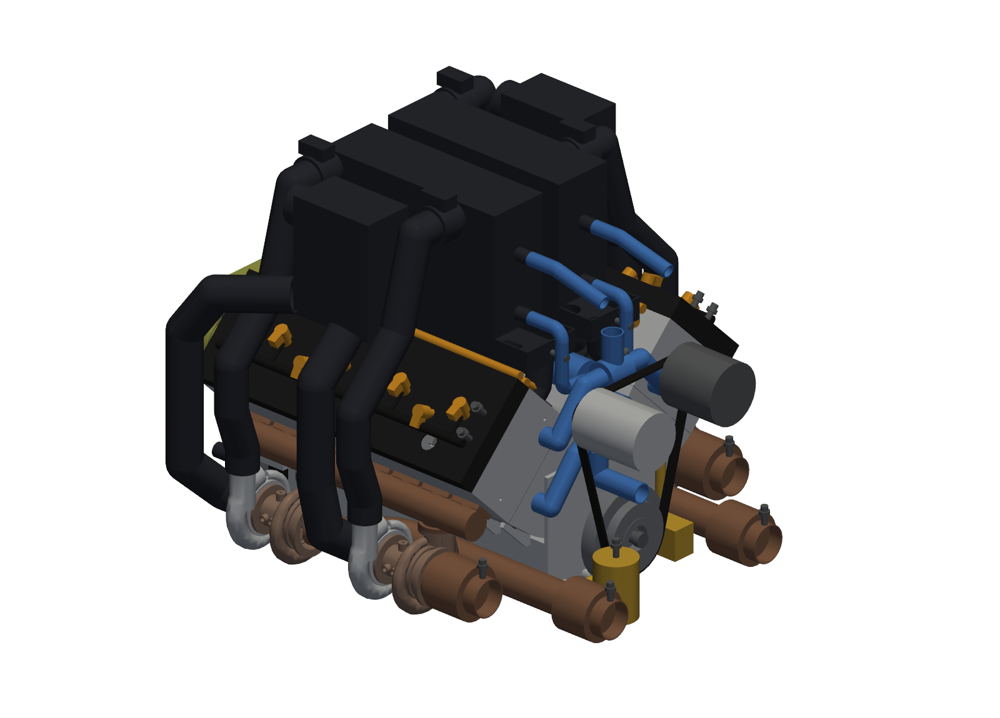
| Item | Value | Tag |
|---|---|---|
| Configuration | W16: two VR8 banks at 90 deg, each with two rows at 15 deg; one crankshaft | PUB |
| Displacement | 7,993 cm3 (7992.92 cm3 from 86 x 86 mm) | PUB / CALC |
| Power / torque | 1,103 kW (1,500 PS) at 6,700 rpm; 1,600 N m from 2,000 to 6,000 rpm | PUB |
| Charging | four equal turbochargers, two per bank, sequential; second pair from about 3,800 rpm | PUB |
| Injection | duplex, 32 injectors | PUB |
| Cylinder pitch | 73 mm | PUB |
| Firing | 45 deg intervals; order 1-14-9-4-7-12-15-6-13-8-3-16-11-2-5-10 | PUB / SEC |
| Compression ratio | 9.0 | SEC |
| Cooling | 800 L/min HT pump; separate LT charge-air circuit; charge air cooled by up to 130 K | PUB |
| Mass / length | about 400 kg / 710 mm | PUB / SEC |
Full list and sources: 03_REFERENCE_SPECIFICATIONS/REFERENCE_SPEC.md, 01_RESEARCH/RESEARCH_LOG.md.
All provisional values are in 03_REFERENCE_SPECIFICATIONS/MASTER_PARAMETERS.md (tag EST) and every non-obvious choice is in
00_PROJECT_CONTROL/DECISIONS.md. The most consequential ones:
Coordinate system: X = crank axis (+X flywheel end), Z up, bank 1 (cyl 1-8) towards +Y. Crank throw 42.868 mm (offset bores make the stroke larger than twice the throw), deck height 237.08 mm, bore centres +/-43.71 mm at the deck, bank offset 18.0 mm. Crankpin phases are derived from the published firing order; the two cylinders on every pin require the same pin angle to 1e-13 deg and all firing intervals found numerically are 45.000 deg, which shows the published order and the shared-pin 90 deg layout are mutually consistent.
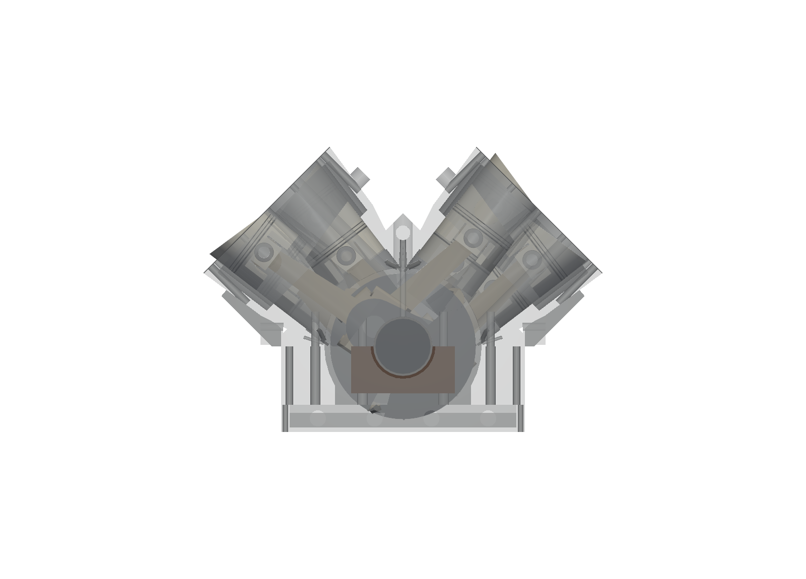

Transverse section through cylinder 1 (outer row, bank 1).
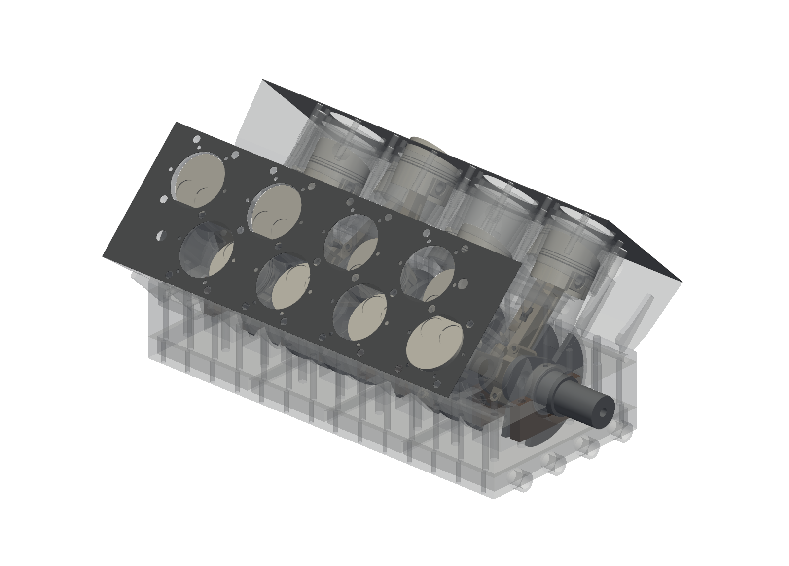
Envelope from CAD: dressed engine 976 x 900 x 832 mm (L x W x H); long block 796 x 754 x 483 mm. The published length is 710 mm; this reconstruction's block is 660 mm long and the long block 796 mm including chain housing and crank nose.
Split at the crank axis: upper section with both banks, lower bearing support with nine cast-in iron bearing covers (4 bolts each), dry-sump pan. Zig-zag bores with a 27.9 mm web at the deck and 4.0 mm at the bore foot. Closed deck; the water jacket of each bank is one connected volume of 1.22 L surrounding all eight bores (CAD-measured), fed at the free end, with four transfer holes per cylinder to the head. Oil: central gallery dia 18 mm to the nine main bearings and the inner-row piston jets; two side galleries for the outer-row jets.
Crankshaft assembly group 32.49 kg, eight bored pins, R2.5 fillets, drilled oil ways. The webs are only 9.5 mm thick and the rods pass between them at BDC, so counterweights cannot be wider than the webs: each throw is balanced internally to 65-67 % and the sixteen counterweights are sized so that the resultant force and couple of the complete crank are zero (residual 7.2e-15 kg mm, 1.1e-13 kg mm2). Titanium I-beam rods with trapezoidal small end; forged pistons with a crown tilted 16.01 deg to the pin-axis normal, three rings, slipper skirt.
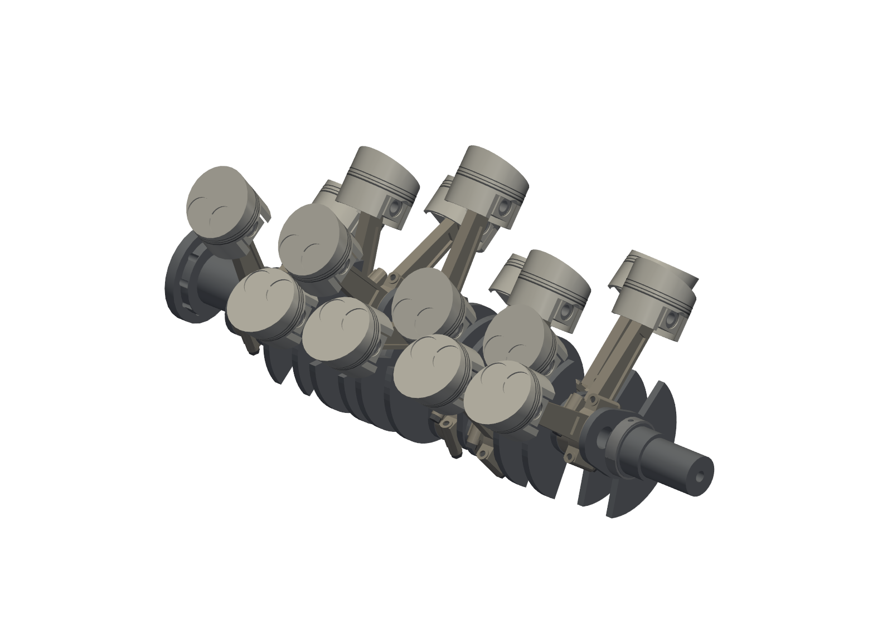
Each head: eight wedge chambers, 16 intake ports from the valley side and 16 exhaust ports outboard (short and long ports alternate), 32 valves, one row of eight inclined plug wells between the camshafts, a single connected water jacket (2.20 L, CAD-measured), oil galleries with risers to the cam bearings. Valve sizes 32 / 27 mm, lifts 10.0 / 9.5 mm, follower ratio 2.0. Cam lobes are the exact inner envelope of the dia 17 mm roller.

Valve train of bank 1 (head semi-transparent, cut).
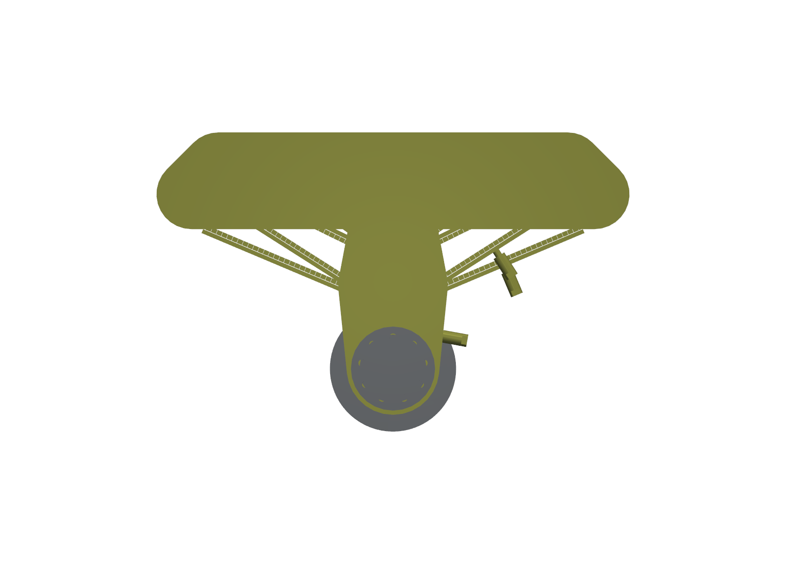
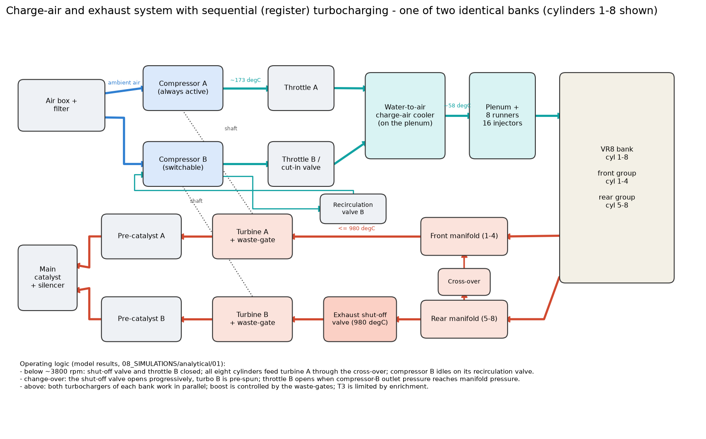

Turbochargers, exhaust (red) and charge-air system (blue) on the long block.
32 port injectors on four rails, 16 M10 plugs with pencil coils and ion-current measurement, two ECUs (concept). No calibration exists.
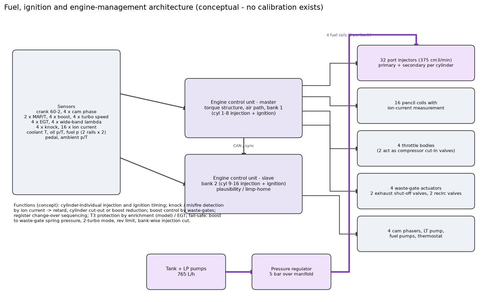
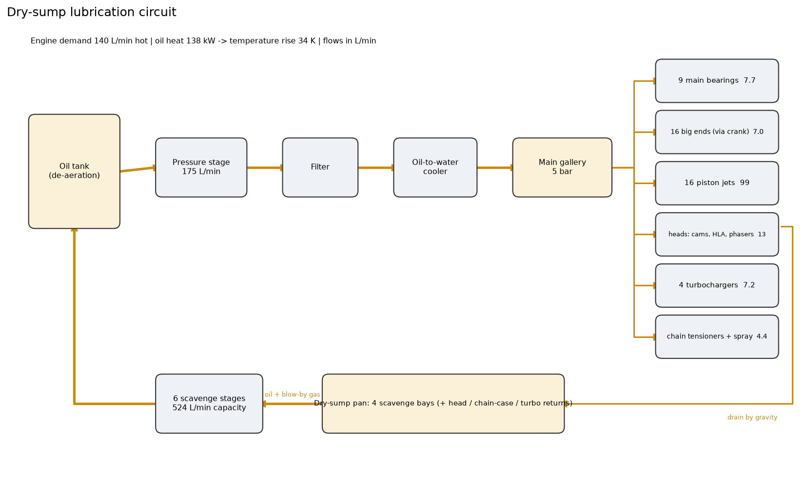

High- and low-temperature cooling circuits.
Hierarchy and masses: 06_ASSEMBLIES/ASSEMBLY_HIERARCHY.md. Sub-assembly and master STEP files: 06_ASSEMBLIES/step/, 13_EXPORTS_STEP/.
| Group | Sub-assembly | Part numbers | Parts | Mass [kg] |
|---|---|---|---|---|
| 01 | Crankcase and cylinder block | 7 | 48 | 97.79 |
| 02 | Cylinder heads | 8 | 152 | 43.51 |
| 03 | Piston assemblies | 5 | 112 | 9.78 |
| 04 | Connecting rods | 5 | 112 | 6.84 |
| 05 | Crankshaft | 1 | 1 | 32.49 |
| 06 | Valvetrain | 13 | 324 | 17.41 |
| 07 | Timing system | 10 | 493 | 5.89 |
| 08 | Turbochargers | 14 | 32 | 22.43 |
| 09 | Intake system | 24 | 24 | 24.66 |
| 10 | Exhaust system | 18 | 18 | 17.86 |
| 11 | Fuel injection and ignition | 7 | 68 | 8.86 |
| 12 | Lubrication system | 6 | 6 | 9.13 |
| 13 | Cooling system | 14 | 14 | 3.79 |
| 14 | Accessory system | 15 | 39 | 32.7 |
| 15 | Fasteners and interfaces | 4 | 154 | 11.11 |
CAD mass 344.3 kg dry, as modelled (published: about 400 kg; the CAD figure includes dressing items such as pre-catalysts, air boxes, oil tank and charge-air system, and excludes unmodelled small parts and fluids - the two numbers are not directly comparable).

Exploded view.
08_SIMULATIONS/analytical/)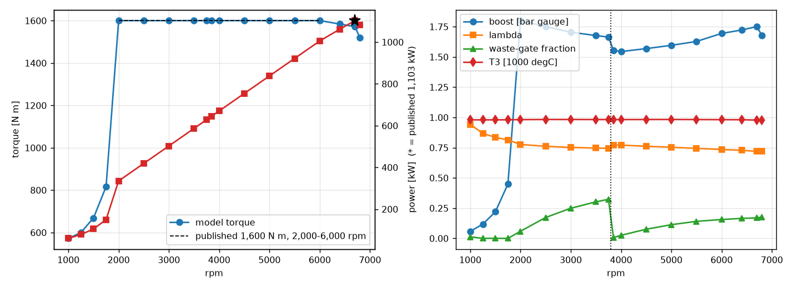
| Quantity at rated power | Model | Published |
|---|---|---|
| Boost pressure | 1.75 bar gauge | not published (about 1.85 bar quoted by secondary sources) |
| Air flow | 60,737 L/min | more than 60,000 L/min |
| Charge-air temperature drop | 115 K | as much as 130 K |
| Turbine inlet temperature | 978 degC (held by enrichment, lambda 0.72) | valve rated 980 degC |
| Peak cylinder pressure | 105 bar | not published |
| BSFC / fuel flow | 383 g/kWh / 567 L/h | - |
Torque and power are model targets, so they match by construction; the informative results are the boost, flows and temperatures and the fact that the turbocharger power balance closes with four equal turbochargers sized at the change-over point. The same sizing gives full torque with two turbochargers from about 2,000 rpm, consistent with the published plateau.

Compressor operating line (surge/choke lines are representative shapes, not a measured map).
Rod force 50.9 kN compression at full load, 23.5 kN tension at 7300 rpm; main bearing peak 36.7 kN. With fully balanced throws the free forces and moments would be 206 N and 39 N m at rated speed (higher orders only). First torsional mode 302 Hz (lumped model).

Torque ripple and main-bearing load loci.
Fuel power 4983 kW; to HT coolant 341 kW (temperature rise 6.9 K at 800 L/min); to oil 138 kW; charge-air coolers 146 kW at effectiveness 0.90. Oil demand 140 L/min, pump 175 L/min.
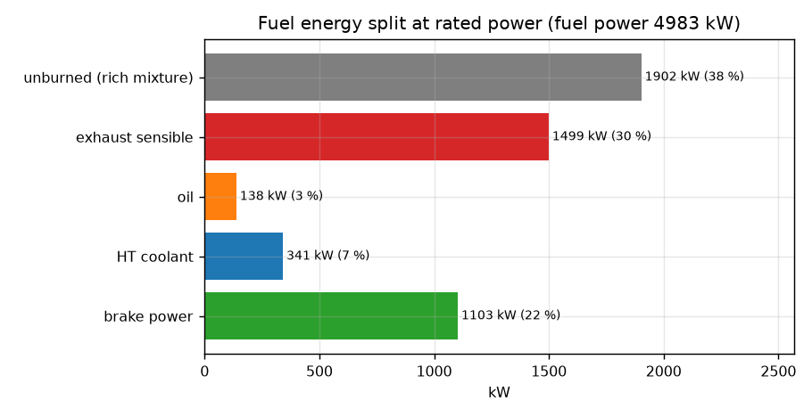
Tools: gmsh tetrahedral meshes of the CAD solids, scikit-fem linear elasticity (P2 unless noted) and steady conduction (P1). Peak values at re-entrant corners and at fixed boundaries are mesh-dependent; the 99.9th-percentile element stress is reported next to the peak.
| Case | Load case | Mesh | Results | Boundary conditions |
|---|---|---|---|---|
| cylinder block slice, cylinder 3 | gas pressure | 115645 tets, gamma min 0.01 | vm max MPa = 171; vm p999 MPa = 122; max displacement mm = 0.163 | 100 mm slice centred on cylinder 3 (contains its complete bore wall ring); crank-axis split plane fixed; the two cut faces (x = cyl. 3 +/- 50 mm) are symmetry planes (axial displacement fixed); design pressure on the upp |
| cylinder block slice, cylinder 3 | thermal | 115645 tets, gamma min 0.01 | T max C = 189; T bore max C = 189; T bore mean C = 125 | 100 mm slice centred on cylinder 3 (contains its complete bore wall ring); crank-axis split plane fixed; the two cut faces (x = cyl. 3 +/- 50 mm) are symmetry planes (axial displacement fixed); design pressure on the upp |
| cylinder block slice, cylinder 3 | thermal expansion | 115645 tets, gamma min 0.01 | bore radial growth mean um = 57.2; bore out of round um = 509 | 100 mm slice centred on cylinder 3 (contains its complete bore wall ring); crank-axis split plane fixed; the two cut faces (x = cyl. 3 +/- 50 mm) are symmetry planes (axial displacement fixed); design pressure on the upp NOTE: thermal growth with the same supports as the gas case (split plane fixed, cut faces symmetric); includes bending of the bank, so out-of-round is an upper bound |
| crank throw 3 in bending | single load case | 86269 tets, gamma min 0.09 | vm max MPa = 167; vm p999 MPa = 128; pin deflection mm = 0.0159; factor on p999 = 8.14 | both main-journal surfaces fully fixed (stiffer than real bearings -> fillet stress over-predicted); load on the central part of the pin; pulsating load, alternating stress = half the peak |
| cylinder head slice, cylinder position 3 (thermal) | single load case | 56985 tets, gamma min 0.00 | T max C = 339; T valve bridge max C = 220; T valve bridge mean C = 159; T roof mean C = 144; energy balance error pct = 2.14e-12 | cycle-mean chamber heat of one cylinder: roof area at the 1-D roof flux, the valve-head share through the seat-insert pockets; convection on all water-jacket walls inside the slice; port gas-side heat input (exhaust port NOTE: The slice faces (x = position 3 +/- 36.5 mm) cut through the outer intake-valve seat pockets, leaving thin adiabatic slivers; T_max and the gas-side 99th percentile are dominated by these slivers and are slice artefacts. Representative results: valve-bridge maximum and mean, roof mean. |
| main bearing cover (cast-in insert) | single load case | 10763 tets, gamma min 0.24 | vm max MPa = 88.8; vm p999 MPa = 74.5; bore deflection mm = 0.0203; yield factor on p999 = 4.97; peak bearing pressure MPa = 28 | bolt-hole surfaces fixed; support from the surrounding aluminium bedplate neglected (conservative) |
| piston | gas pressure | 81483 tets, gamma min 0.00 | vm max MPa = 171; vm p999 MPa = 107; crown deflection mm = 0.093; peak bearing pressure MPa = 85.3; T at vm max C = 248 | gas and gas + thermal: design gas pressure on all chamber-side surfaces above the top ring (crown, valve pockets, top land; ring-groove and second-land pressures neglected); pin reaction as a cosine bearing pressure on t |
| piston | thermal | 81483 tets, gamma min 0.00 | T max C = 433; T crown mean C = 380; T top ring groove C = 267; energy balance error pct = 4.64e-12 | gas and gas + thermal: design gas pressure on all chamber-side surfaces above the top ring (crown, valve pockets, top land; ring-groove and second-land pressures neglected); pin reaction as a cosine bearing pressure on t |
| piston | gas plus thermal | 81483 tets, gamma min 0.00 | vm max MPa = 277; vm p999 MPa = 139; max displacement mm = 0.391; T at vm max C = 248 | gas and gas + thermal: design gas pressure on all chamber-side surfaces above the top ring (crown, valve pockets, top land; ring-groove and second-land pressures neglected); pin reaction as a cosine bearing pressure on t |
| piston | fatigue estimate | 81483 tets, gamma min 0.00 | factor = 2.05; sigma a MPa = 53.6 - room-temperature limit: NOT an acceptance measure (hot fatigue: section 8.1) | gas and gas + thermal: design gas pressure on all chamber-side surfaces above the top ring (crown, valve pockets, top land; ring-groove and second-land pressures neglected); pin reaction as a cosine bearing pressure on t NOTE: gas load from zero to the design pressure every cycle: alternating stress = half the 99.9th-percentile gas-case stress, against the room-temperature fatigue limit (no mean-stress or temperature correction - the hot strength at the boss and ring belt is lower) |
| connecting rod | compression design gas force | 16899 tets, gamma min 0.02 | vm max MPa = 391; vm p999 MPa = 357; yield factor on p999 = 2.47; max axial displacement mm = 0.278; peak bearing pressure MPa = 159 | big-end bore half fixed (loaded half); cosine bearing pressure on the loaded half of the small-end bore; no bolt preload, no contact |
| connecting rod | tension overspeed inertia | 16899 tets, gamma min 0.02 | vm max MPa = 590; vm p999 MPa = 488; yield factor on p999 = 1.81; max axial displacement mm = 0.473; peak bearing pressure MPa = 59.3 | big-end bore half fixed (loaded half); cosine bearing pressure on the loaded half of the small-end bore; no bolt preload, no contact |
| connecting rod | fatigue estimate | 16899 tets, gamma min 0.02 | factor = 1.18; sigma a MPa = 422 | big-end bore half fixed (loaded half); cosine bearing pressure on the loaded half of the small-end bore; no bolt preload, no contact NOTE: alternating stress taken as half the sum of the two p99.9 stresses (conservative, locations differ) |

Connecting rod, design gas force: von Mises stress.

Piston steady temperature field.
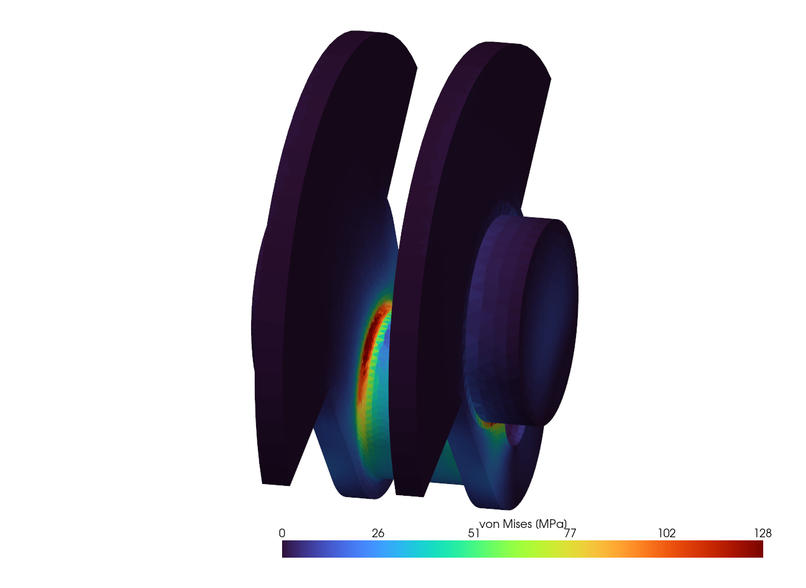

Cylinder-block slice: temperature field.
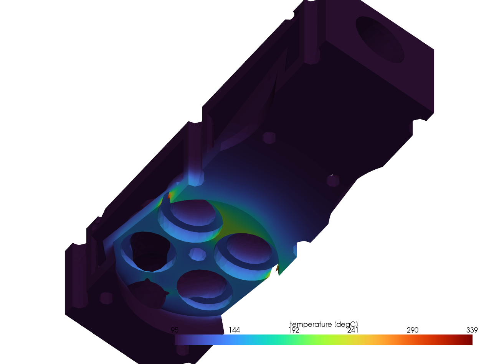
Result: the piston FAILS hot fatigue with temperature-dependent strength (4032-T6, lower-bound data after 10,000 h at temperature): factor 0.10-0.28 over the hot regions (table). The room-temperature fatigue factor 2.05 in the FE table is not an acceptance measure: it compares with the 110 MPa room-temperature limit at metal temperatures of 248-388 degC. Piston thermal design is an OPEN item.
| Region (governing element) | Metal temperature [degC] | sigma_a [MPa] | sigma_f(T) [MPa] | Factor | Factor, Goodman | Temperature for factor 1.5, lower-bound data [degC] |
|---|---|---|---|---|---|---|
| Crown above the oil gallery | 388 | 61.4 | 6.4 | 0.10 | 0.08 | 115 (below the 127 degC oil) |
| Crown section under the long-valve pockets | 356 | 58.1 | 7.3 | 0.13 | 0.10 | 124 (below the 127 degC oil) |
| Ring belt at the top ring groove | 301 | 42.3 | 11.6 | 0.27 | 0.21 | 162 |
| Pin bosses | 267 | 53.5 | 15.2 | 0.28 | 0.22 | 138 |
| Slot-end corner under the crown (unradiused in the concept CAD) | 248 | 85.6 | 18.2 | 0.21 | 0.16 | none: room-temperature factor 1.29 (target 1.5) |
Thinnest crown section, 3.3 mm from the pocket floors to the oil-gallery roof: 319-378 degC (mean 354 degC), von Mises up to 116 MPa under gas load and 127 MPa gas + thermal.
The linear-elastic gas + thermal stress (99.9th percentile 139 MPa, peak 277 MPa at 248 degC) exceeds even the hot tensile strength of the alloy (lower-bound data: 63 MPa at 248 degC, 26 MPa at 354 degC), so that result is outside the range of a linear analysis.
Consequences: - With the lower-bound data the crown would have to run at about 115 degC or less - below the 127 degC oil - so cooling alone cannot reach a factor of 1.5 (best cooling case of the FE sensitivity, gallery 4,000 + under-crown 1,000 W/m2K: crown mean 334 degC against 380 degC); a hot-strength piston material or a steel crown, with measured hot fatigue data, and/or lower crown stresses are needed. - Slot-end corner: misses the 1.5 target (room-temperature factor 1.29, above 1.0 but below the 1.5 target, whatever the crown temperature) at a corner the concept CAD leaves unradiused, so the value is mesh-dependent: it needs a real radius and a mesh-converged re-check (OPEN). Its hot factor in the table is mesh-dependent for the same reason. - A heavier piston loads the titanium rod: rod fatigue factor 1.18 now, about 0.044 lower per 50 g of reciprocating mass (0.741 kg now; the overspeed tension scales with it).
Method: sigma_a = 0.5 x gas-case element von Mises; sigma_f(T) = 110 MPa x UTS(T) / UTS(RT), UTS of 4032-T6 after 10,000 h at temperature (EST scaling); factor = sigma_f(T) / sigma_a; Goodman: 1 / (sigma_a / sigma_f(T) + sigma_m / UTS(T)) with sigma_m = sigma_a. Element means (no extrapolation to the surface); the slot-end corner is unradiused in the concept CAD, so its value is mesh-dependent.
Source: ASM Handbook Vol. 2, Properties and Selection: Nonferrous Alloys and Special-Purpose Materials (ASM International, 1990), wrought alloy 4032: typical tensile properties of 4032-T6 at elevated temperature (after 10,000 h at temperature) and fatigue strength 110 MPa at 5e8 cycles (R.R. Moore). Also tabulated in J.G. Kaufman, Properties of Aluminum Alloys: Tensile, Creep, and Fatigue Data at High and Low Temperatures (ASM International / The Aluminum Association, 1999).
Short-exposure (upper-bound) strength data were not evaluated: the fatigue strength needed for a factor of 1.5 at the operating temperatures is 0.58-0.84 of the room-temperature value (1.17 at the slot-end corner); the project judged on 2026-11-20 that short-exposure data cannot change the conclusion. Evaluation: tools/piston_section_fatigue.py -> 08_SIMULATIONS/fea/piston_section_fatigue.json.
Limitations of the FE work: linear elastic, no contact, no bolt preload, no bearing films, simplified supports, slices instead of the complete castings, cycle-mean thermal loads from the 0-D model, no fatigue solver (factors are simple ratios against handbook limits).
| Check | Part A | Part B | Occurrences | Max overlap [mm3] |
|---|---|---|---|---|
| static | W16-09-air_duct_B-L1 | W16-09-charge_pipe_B-L1 | 1 | 1488 |
| static | W16-09-air_duct_B-L2 | W16-09-charge_pipe_B-L2 | 1 | 1487 |
| static | W16-09-air_duct_A-L1 | W16-10-downpipe_B-L1 | 1 | 840.7 |
| static | W16-09-air_duct_A-L2 | W16-10-downpipe_B-L2 | 1 | 838.5 |
| static | W16-07-008~10 | W16-07-010 | 1 | 598.9 |
| static | W16-07-008~03 | W16-07-010 | 1 | 521 |
| static | W16-07-008~05 | W16-07-010 | 1 | 468.9 |
| static | W16-07-008~08 | W16-07-010 | 1 | 468.9 |
| static | W16-13-pipe_pump_to_block_2 | W16-14-front_cover | 1 | 238.7 |
| static | W16-13-pipe_pump_to_block_1 | W16-14-front_cover | 1 | 238.7 |
| static | W16-07-008~09 | W16-07-010 | 1 | 223.2 |
| static | W16-07-008~04 | W16-07-010 | 1 | 175.7 |
| static | W16-07-008~06 | W16-07-009 | 1 | 149.7 |
| static | W16-07-008~04 | W16-07-009 | 1 | 149.6 |
| static | W16-08-003 | W16-10-downpipe_B-L1 | 1 | 137.9 |
| static | W16-08-004 | W16-10-downpipe_B-L2 | 1 | 137.9 |
| static | W16-08-003 | W16-10-shutoff_valve-L1 | 1 | 128.4 |
| static | W16-08-004 | W16-10-shutoff_valve-L2 | 1 | 128.4 |
| static | W16-02-001 | W16-11-rail_P-L1 | 1 | 118.5 |
| static | W16-02-002 | W16-11-rail_P-L2 | 1 | 118.5 |
| static | W16-01-001 | W16-14-mount_bracket_R | 1 | 97.79 |
| static | W16-01-001 | W16-14-mount_bracket_L | 1 | 97.79 |
| static | W16-07-006 | W16-07-010 | 34 | 96.57 |
| static | W16-11-003~0 | W16-11-003~1 | 16 | 82.45 |
| static | W16-07-008~07 | W16-07-010 | 1 | 47.63 |
| static | W16-07-008~06 | W16-07-010 | 1 | 47.63 |
| static | W16-07-006 | W16-07-009 | 4 | 47.14 |
| static | W16-04-003 | W16-05-001 | 32 | 26.53 |
| static | W16-08-014 | W16-10-precat_A-L2 | 1 | 25.69 |
| static | W16-08-013 | W16-10-precat_A-L1 | 1 | 25.69 |
| static | W16-08-004 | W16-10-precat_A-L2 | 1 | 21.2 |
| static | W16-08-003 | W16-10-precat_A-L1 | 1 | 21.2 |
| static | W16-13-pump_inlet_pipe | W16-13-water_pump_impeller | 1 | 6.81 |
| static | W16-13-pipe_pump_to_block_2 | W16-13-water_pump_impeller | 1 | 4.87 |
| static | W16-13-pipe_pump_to_block_1 | W16-13-water_pump_impeller | 1 | 4.87 |
| kinematic | W16-04-003 | W16-05-001 | 96 | 26.53 |
These remaining overlaps are packaging errors of this concept model and are listed as open work; they are not hidden.
- Piston-to-valve clearance, spring loads, transverse head clearances: 08_SIMULATIONS/analytical/03_valvetrain.md.
- Comparison with published targets: section 7.1.
| Criterion | Result | Evidence |
|---|---|---|
| All sixteen cylinders are represented | PASS | 16 bores in the block CAD; pistons x16 |
| Four cylinder banks (rows) correctly organised | PASS | two VR8 banks at 90 deg, each with two rows at 15 deg; firing intervals 45.000 deg (layout check) |
| Engine architecture mechanically coherent | PARTIAL - packaging overlaps listed | interference check: 35 static and 1 kinematic clash pairs remain (listed in the report) |
| Displacement consistent with bore and stroke | PASS | 7992.92 cm3 vs 7,993 cm3 published |
| All sixteen piston assemblies modelled | PASS | pistons 16, pins 16, rings 48 |
| Shared crankshaft modelled | PASS | one-piece crank, 8 pins, 9 mains, distributed counterweights |
| All connecting rods represented | PASS | rods x16 with caps, shells, bushes, bolts |
| Cylinder heads and the 64-valve system modelled | PASS | 64 valves, 64 springs/retainers/followers/support elements, 4 camshafts; two head castings serve the four rows (documented architecture, decision D-003) |
| Four turbochargers modelled | PASS | 2 RH + 2 LH units with housings, wheels, bearing housing, actuator |
| Sequential turbocharging flow architecture documented | PASS | diagram + animation + matching calculation |
| Intake and exhaust systems connected | PASS | manifolds, coolers, charge pipes, logs, cross-over, down-pipes modelled per bank |
| Fuel injection and ignition represented | PASS | 32 injectors, 4 rails, 16 plugs, 16 coils; EMS architecture diagram |
| Lubrication and cooling circuits modelled | PASS | galleries and jackets are real passages in block/heads; external circuit parts and 1-D flow calculations |
| Major mechanical interfaces validated | PARTIAL | CAD interference check (static all-pairs + 12 crank angles); CAD compression ratio 9.00, 9.00 |
| Parametric CAD files editable | PASS | geometry is generated from src/w16/params.py; BREP per part in 05_COMPONENT_CAD/ |
| STEP exports generated | PASS | 166 component STEP files; master assembly 186.33 MB; 15 sub-assemblies |
| STL and 3MF exports generated where supported | PASS | 166 STL, 159 3MF component files |
| Exploded assembly documentation complete | PASS | exploded views + hierarchy |
| Engineering drawings available | PASS | 9 sheets (PDF/SVG/PNG) |
| Simulation evidence documented | PASS | FE cases run: block, crank, head, insert, piston, rod; not run: none; 0-D/1-D models in 08_SIMULATIONS/analytical. No 3-D CFD. |
| BOM complete | PASS | 151 part numbers (modelled content only) |
| Final technical report produced | see file | 12_FINAL_REPORT/ (Markdown + PDF) |
| Deliverables organised in the structured directory | PASS | folders 01-14 + 00_PROJECT_CONTROL + src |
| Piston at operating temperature: hot fatigue (engineering check added 2026-11-20, not in brief section 21) | NOT MET - OPEN | factor 0.10-0.28 with 4032-T6 strength after 10,000 h at temperature (section 8.1); the room-temperature factor 2.05 is not an acceptance measure |
151 part numbers; see 10_BOM_AND_PROCUREMENT/BOM.md / BOM.csv. No costs are given because no reliable price source exists.
See 11_MANUFACTURING_DOCUMENTATION/MANUFACTURING_SPEC.md (materials, processes, critical dimensions, tolerance classes, inspection, assembly sequence, maintenance).
07_ENGINEERING_DRAWINGS/ (9 PDF sheets, also SVG/PNG).13_EXPORTS_STEP/ (master assembly + components); sub-assemblies in 06_ASSEMBLIES/step/. STL / 3MF: 14_EXPORTS_STL_3MF/.09_ANIMATIONS/ (7 GIF, 7 MP4).set PYTHONPATH=src
.venv\Scripts\python -m w16.reports analytical package
.venv\Scripts\python -m w16.cad.assembly CAD build + summary
.venv\Scripts\python -m w16.cad.export all exports, hierarchy, validation
.venv\Scripts\python -m w16.cad.export interference
.venv\Scripts\python -m w16.cad.render views and animations
.venv\Scripts\python -m w16.cad.drawings drawings
.venv\Scripts\python -m w16.sim.fea finite-element cases
.venv\Scripts\python -m w16.diagrams schematics
.venv\Scripts\python -m w16.docs BOM, manufacturing spec, this report